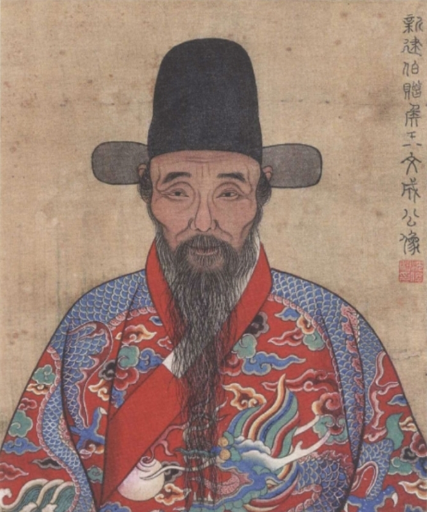

第 3 章
词章场中误
《年谱》中有一段话，收在王阳明晚年回忆自己早年问学经历的部分里。那段话说，他早年曾“泛滥于词章”。
“泛滥”两个字用得很重——不是涉猎，不是旁通，是泛滥。泛滥的意思是不加节制地流溢出去，水离开河道漫到田地里，看上去到处都是水光潋滟，实际上失去了方向。一个人在水里泡得太久，会忘记自己本来是要渡河的。他后来追悔这件事，说即使文章写得像韩愈、柳宗元，辞赋作得像李白、杜甫，说到底也不过是诗人文人，对于“道”并没有根本的助益。

王阳明（王守仁）中年肖像画
图源：维基共享资源 · Shen Junhui (沈俊繪) · Public domain
这话从他嘴里说出来，分量不同。他不是站在岸上嘲笑那些还在水里扑腾的人。他自己在水里扑腾过很多年，差一点就把那一片水当成了海。
但那个二十岁的王守仁并不知道这些。弘治五年秋天，他中式浙江乡试。那一年他二十一岁。父亲王华是成化十七年的状元，在翰林院做修撰，声望正隆。乡试中举是意料之中的事，不算惊喜，也不算挫折。
真正的问题在接下来的两次会试上。弘治六年春闱，他第一次走进会试的考场，落第。弘治九年再考，再落第。
两次失败之间的三年，他从京师回到余姚，在龙泉山寺结了一个诗社。龙泉山不高，在余姚城西，山上有一座寺，寺里有些空房子。王守仁和几个朋友住进去，读书，饮酒，作诗。那段时间留下的诗，后来收在他的集子里，数量不算少。
读那些诗，能看出他在学谁。有些句子学杜甫，沉郁顿挫；有些句子学李白，飘逸奔放；还有些句子学韩愈，奇崛拗折。他学得很用力，用力到有时候一首诗里能看出两三个人的影子，反而看不出他自己在哪里。
这是年轻诗人常有的阶段——先把别人的声音练熟了，再去找自己的声音。只不过王守仁在那个阶段停留的时间比一般人长一些，因为他并不是非要找到自己的声音不可。他当时要的，首先是证明自己能发出声音。
诗社的日子过得不算坏。山寺清静，春天有花，秋天有月，朋友们在一起谈诗论文，偶尔也谈一点天下事。
但诗社里的那些朋友慢慢发现，王守仁和他们不太一样。他们作诗是为了诗本身——为了写出一联好句子，为了在朋友面前争一口气，为了在地方上博一个才子名声。
王守仁也争这些，但他争的时候眼睛里有一种别的东西，好像他不是在争一首诗的好坏，而是在争一个更大的东西，大到他自己也说不清楚。有时候酒喝到一半，他会突然沉默下来，盯着桌上的烛火出神。朋友们以为他在构思句子，不去打扰他。其实他什么也没有想。他只是觉得胸口有一个空洞，那个空洞是格竹失败以后留下的，诗文填不进去，酒填不进去，朋友们的喝彩也填不进去。
那个空洞是怎么来的，他自己最清楚。三年前在京师父亲的寓所里，他和一位姓钱的朋友一起格竹。钱朋友格了三天，病倒了。他格了七天，也病倒了。竹子没有告诉他任何道理。它只是站在风里，春天长出新的叶子，秋天落下旧的，并不因为两个人想要穷究它的理就多给他们一点线索。
这件事在王守仁身上留下的后果，比他自己当时意识到的要深得多。他并没有因为格竹失败就放弃做圣贤的志向——那个志向是十二岁在塾师面前说出口的，已经长进了骨头里，不是一次失败就能拔掉的。但格竹让他明白了一件事：朱熹指出的那条路，他走不通。
朱熹的路是当时所有读书人公认的正路。《大学》说“致知在格物”，朱熹注解说，天下之物莫不有理，学者应当逐一穷究，积累既多，自然贯通。这个说法在逻辑上没有毛病。毛病出在实践上。
王守仁用七天七夜的时间去格一丛竹子，格到心力枯竭，什么也没有格出来。这不只是方法不对，而是整个方向可能都不对。如果连一丛竹子的理都格不出来，又怎么去格天下万物的理？如果天下万物的理格不出来，又怎么去做圣贤？他没有答案。
他只知道格物之门已经在他眼前合上了，圣贤不是这样格出来的。但圣贤应该怎样做，他不知道。人在不知道的时候最容易做的事情，就是去做那些别人告诉他对的事情。别人告诉他科举是对的，他就去考科举。别人告诉他词章是对的，他就去学词章。
这不是放弃，这是权宜。他在等，等一个他自己也说不清楚的契机，等一条他自己还没有看见的路。在等到之前，他需要做一些事情来安顿自己的身心，至少安顿自己的时间。词章就是这样进入他的生命的。
弘治九年第二次会试落第之后，王守仁没有立刻回余姚。他在京师留了一段时间，和一些人交往。《年谱》记载他“与京师文学复古人物往来”。这句话很简短，但信息量不小。
弘治年间，文坛上有一批人不满于台阁体的平庸肤廓，主张回到古代去寻找典范。他们推崇秦汉的散文、盛唐的诗歌，认为最好的东西已经在过去被创造出来了，今人应当以古人为师，通过模仿和学习来矫正当代文风的萎靡。这股风气刮得很猛，很多人被卷进去，王守仁也在其中。他和这些人的交往具体到什么程度，史料没有更详细的记载。
但可以确定的是，弘治十年到十二年之间，王守仁在京师观政工部。这是一个新科进士的见习官职，事情不多，时间充裕。他用那些时间读了很多书，写了很多诗文，见了很多以诗文名世的人。
他的诗文声名渐渐起来了。有人开始说，状元公的儿子不只是会考试，文章也写得好，诗也作得漂亮。这种话听多了，人会有一点恍惚。格竹失败以后，王守仁对自己能不能做圣贤产生过怀疑。
那种怀疑不是口头上的——口头上的怀疑说出来就轻了——而是身体里的。七天七夜的心力枯竭留在身体里的记忆，不只是疲倦，而是一种被掏空的感觉，好像有什么东西从胸口被抽走了，剩下一层壳。词章在那个时候伸出手来，把那层壳填上了一些东西。那些东西不是道理，不是信念，是声音——是诗句落在纸上的声音，是别人读到那些诗句时发出的赞叹声，是在文人雅集上被人推许为才子的那种声音。那些声音合在一起，形成一种嗡嗡的回响，暂时盖住了胸口那个空洞发出的沉默。
暂时。弘治十二年春，王守仁第三次参加会试，中式，殿试二甲第七名，赐进士出身。同年观政工部。这一年他二十八岁。
从二十一岁中举到二十八岁成进士，中间隔了七年，两次落第，一次诗社，一次京师文坛的浸润。七年不是一个短时间。一个人从二十岁到三十岁之间所做的事情，往往决定了他在四十岁、五十岁时看世界的方式。
王守仁在这七年里做的事情是词章——写诗，作文，和文人往来，在诗文圈子里建立自己的名声。
这些事情看起来离圣贤很远，但离当时的读书人很近。科举制度把诗文能力变成了仕途的敲门砖，复古运动又把诗文能力变成了文化资本的硬通货。一个读书人把时间花在词章上，在当时不是不务正业，而是正业中的正业。
问题在于，王守仁不是一般的读书人。一般的读书人可以把词章当作目的本身——考中进士，进入仕途，在官场上写应酬诗文，退休后编纂自己的文集，被后辈尊为能文的前辈，这就够了。王守仁做不到。不是他不想做，而是他做了以后发现不够。词章给了他名声，给了他朋友圈，给了他在京师立足的资本，但没有给他那个他最想要的东西——对“道”的把握。
他写诗的时候可以暂时忘记那个东西，喝完酒和朋友告别回到寓所的时候，那个东西又会回来。它不说话，只是在那里，像一个没有愈合的伤口，不碰的时候不疼，碰一下就疼。
有一件事情可以作为旁证。弘治十四年，王守仁三十岁，在京师做刑部主事。这一年他生了一场病，病得不轻。病中他有一个念头：如果就这样死了，他这辈子留下了什么？
他当初走进词章这个场域，不是因为他对诗歌散文本身有多大的热情——他当然有热情，但那热情不是原发的——而是因为格竹失败以后，他需要一个替代性的路径来安放自己的志向。词章接住了那个志向，把它变成了可以操作的东西：读书，模仿，创作，切磋，被认可。这个过程在形式上很像格物穷理——也是在积累，也是在渐进，也是在等待一个豁然贯通的时刻。不同的是，格物穷理的对象是天下万物之理，词章的对象是前人留下的文字之法。前者通向圣贤，后者通向文人。王守仁在词章上用的功越多，离圣贤就越远。
复古运动的理论本身包含着一种矛盾。那些主张回到古代的人，前提是承认古代比当代好，承认最好的东西已经在过去被创造出来了，今人所能做的只是模仿和学习。如果把这个逻辑推到极致，结论就是今人永远不可能超越古人，词章的最高成就不过是逼肖古人而已。韩愈学秦汉，学得像，所以是好文章。李白学古人，学得像又不像——像处有古意，不像处有自己——所以是好诗。
但再好的诗，再好的文章，也不过是诗和文章。它们能让人感动，让人赞叹，让人记住作者的名字，但不能让人成为圣贤。这一点，王守仁在二十八岁前后还没有完全想清楚。
他只是隐约觉得不对。那种不对的感觉不是来自理论的辨析，而是来自身体的反应。
他在文人雅集上应酬的时候，在灯下推敲诗句的时候，在收到别人赞誉的时候，心里偶尔会掠过一丝烦躁。那丝烦躁很轻，轻到他自己有时候都注意不到。但它反复出现，每一次出现都在提醒他：你不是在做你最想做的事情。
还是那个十二岁说出口的答案：学圣贤。这个答案一直没有变过。变的是通向它的路径。
格竹是一条路，走不通。词章是一条路，走通了——走通了科举，走通了文坛，走通了名声——但走通了以后发现走错了方向。这条路通向的不是圣贤，而是文人。文人和圣贤之间的距离，比王守仁最初以为的要远得多。
这里需要停下来做一个分辨。有一种看法认为，阳明心学本质上是对孟子心性论和陆九渊本心说的系统化哲学重构，其生平事件仅为偶然触发因素，学说内核具有超越具体情境的先验一致性。按照这种看法，词章阶段不过是青年王守仁的一段无关紧要的经历，与他后来的哲学建构没有内在关联——他迟早会回到心性之学的路上来，词章只是一个可以被忽略的插曲。
这个看法的问题在于，它把思想史的逻辑当成了生命史的逻辑。从思想史的角度看，阳明心学的核心命题确实可以在孟子那里找到渊源，在陆九渊那里找到前驱。
但从生命史的角度看，一个二十一岁的年轻人不会因为读过孟子就天然地知道朱熹的格物路线走不通，也不会因为知道陆九渊说过“心即理”就天然地知道这三个字究竟是什么意思。他必须自己去试——去格竹，去学词章，去接触佛老——每一条路都走到尽头，确认前面没有路了，才能真正回到自己心里来。
词章阶段在这个过程中的作用不是可有可无的。它是格竹失败之后出现的第一个替代路径。这个路径的特点是：它完全被社会承认，完全符合一个读书人的正常上升轨道，完全可以在不给当事人带来任何风险的情况下提供成就感和社会地位。正因为如此，它对王守仁的诱惑力才足够大，大到足以检验他那个“学圣贤”的志向究竟有多坚固。
检验的结果是：志向没有被消解，但被搁置了。搁置不是放弃——放弃是承认自己做不到，搁置是把事情先放在一边，等条件成熟了再来处理。王守仁在词章上用功的那些年，就是把“学圣贤”这件事搁置起来的年份。
他告诉自己：先把科举考过，先把官职做到，先在文坛上立住脚，然后再回头来做圣贤的工夫。这个想法在当时的读书人中很常见——先解决生存问题，再解决精神问题；先取得社会位置，再追求个人理想。
但这个想法有一个致命的漏洞：生存问题解决了以后，精神问题往往就被忘记了；社会位置取得了以后，个人理想往往就被替换了。一个人做了十年官、写了十年应酬诗文之后，他很可能已经想不起来自己最初为什么要做官、为什么要写诗文了。手段变成了目的，过程吞噬了初衷。
王守仁差一点就掉进了这个陷阱。说“差一点”，是因为他在词章这条路上走得越远，心里的不安就越重。这种不安不是来自外部的批评——没有人批评他不该学词章，恰恰相反，所有人都在称赞他的诗文写得好——而是来自内部的空洞。那个空洞是格竹失败留下的，是对“道”的渴望没有得到满足留下的。词章可以盖住它，可以让人暂时忘记它，但不能消除它。它一直在那里，像一个没有回答的问题。弘治十五年，王守仁三十一岁。
这一年他做了一件事：告病归越。名义上是身体不好，实际上是心里不安。他在京师已经立住了脚——有官职，有文名，有朋友，有前途——但他觉得这些东西加起来还是轻飘飘的，压不住胸口那个空洞。
他需要找一个安静的地方，一个人待一段时间，想一想自己到底要什么。他选择了会稽山上的一个溶洞，后来被称为阳明洞。
这个选择本身就是一个信号。他没有选择回余姚老家继续经营诗社，没有选择去拜访更多的文坛前辈来扩大自己的名声，而是选择了一个传说中有道士修炼过的山洞。这说明在他心里，词章这条路已经走到头了——不是因为他的诗文写不下去了，而是因为他发现诗文不能回答他最想问的那个问题。
那个问题是什么？他在格竹的时候问的是：竹子的理在哪里？天下的理在哪里？做圣贤的路在哪里？这些问题在词章阶段被暂时搁置了，但没有消失。它们只是换了一个形式潜伏下来，等到夜深人静的时候再浮上来。
现在他三十一岁了，中了进士，做了官，有了文名，那些问题还在那里——竹子的理没有答案，天下的理没有答案，做圣贤的路没有答案。他在阳明洞里住了一段时间，行导引术。导引术是道教养生功法的一种，通过调节呼吸和身体姿势来达到延年益寿的目的。道教在修身方面讲究“人天合一”、“归根复命”、“长生久视”，追求的是通过修炼达到与道合一的境界。王守仁练得很认真，《年谱》记载他一度能够“先知”——坐在洞里，有人来访，他能提前感知到来者是谁。
但王守仁自己很快就把这种神秘色彩剥掉了。他在洞里住了一段时间以后，忽然想明白了一件事：导引术也好，先知也好，说到底还是“簸弄精神”，不是道。簸弄精神的意思是玩弄精神现象，追求一些奇异的体验，以为那些体验就是道的体现。其实不是。道不在那些体验里。
他想通了这一点，就离开了阳明洞。离开阳明洞的时候，他还没有找到道。但他已经知道道不在哪里了。不在竹子里，不在诗文里，不在导引术里，也不在先知的幻觉里。
这个“不在哪里”的清单越来越长，每增加一项，他就离那个真正的答案近了一步。现在回过头来看词章阶段，才能看清它在整个清单里的位置。词章不是无关宏旨的弯路。它是王守仁在格竹失败之后所做的一次认真的尝试——尝试用社会承认的方式来实现自己的志向。科举是入仕的正途，词章是科举的工具，也是仕途的装饰。
一个读书人沿着这条路走下去，可以做到高官，可以赢得文名，可以在历史上留下一个能文之名。这在当时已经是很多人梦寐以求的成就了。王守仁差一点就满足于此。差一点。
没有满足的原因不是他比别人更有道德自觉——道德自觉这种东西是靠不住的，它会在你需要它的时候消失——而是他身体里那个空洞始终没有被填上。那个空洞是格竹失败留下的，是对“道”的渴望没有得到满足留下的。词章可以盖住它，可以让人暂时忘记它，但不能消除它。弘治十七年，王守仁三十三岁。这一年他被任命为山东乡试的主考官。这是一个重要的差事，通常由有文名的官员担任。
他能得到这个任命，说明他的诗文能力在朝廷已经得到了认可。他在山东出的考题里有一道很能说明问题：问“佛老为天下害”。这个题目出得有意思——他自己刚刚从佛老的诱惑里挣脱出来不久，就用考场的题目来拷问佛老。这既是对考生的考察，也是对自己的清算。
他出的另一道题更值得注意：问“志士仁人”。什么是志士仁人？他的标准答案写得很清楚：不求声名，不谋利禄，只求尽自己的本分。这个答案和他自己在词章场上的行为形成了对照。他在词章场上求过声名，谋过利禄——至少是科举带来的利禄——他知道那是什么滋味。
现在他站在主考官的位置上，告诉那些想要通过科举改变命运的年轻人：真正重要的不是这些东西。这不是虚伪。这是一个过来人在告诉后来者他自己走过的弯路和弯路尽头的风景。从山东回来以后，王守仁在京师继续做官，继续写诗文，继续和文人往来。但他的重心已经开始转移了。他开始更多地谈论身心之学，开始吸引一些年轻人来向他问学。
这些人里有的后来成了他的弟子，有的成了他的论敌，有的先做弟子后做论敌。心学的种子在这个时候已经埋下了，只是还没有发芽。
词章阶段在王守仁一生中的意义，要到很多年以后才能完全看清。他晚年对词章的追悔，不是否定诗文本身的价值——他自己的诗文一直写到老，《四库全书总目》评价他的文章“博大昌达”，诗“秀逸有致”，认为“不独事功可称，其文章自足传世”——而是否定诗文作为求道路径的有效性。诗文可以载道，但诗文本身不是道。把诗文当作道来追求，就像把手指当作月亮来膜拜。手指可以指月，但手指不是月。
这个道理说起来简单，做起来难。难在什么地方？难在手指太漂亮了。漂亮的文字有一种魔力，它能让人忘记它只是工具，而把它当作目的本身来追求。王世贞后来评价王阳明的诗时说：“伯安之为诗，少年有意求工，而为才所使，不能深造而衷于法；晚年尽举而归之道，而尚为少年意象所牵，率不能深融而出于自然。”
这段话点出了一个关键的事实：早年在词章上用功太深的人，即使后来想要把诗文纳入道的轨道，也难免被早年的习惯所牵制。词章的“法”一旦内化到肌肉记忆里，就不是想丢就能丢掉的。王守仁在词章上用功的那些年，就是被这种魔力迷住了。他不是不知道文字只是工具，但他写着写着就忘了。忘了以后，就需要什么东西来提醒他。提醒他的东西是身体里的那个空洞。那个空洞不说话，不催促，不指责。
它只是在那里，让他知道有什么东西还没有被满足。他在诗社喝酒的时候它在，他在京师应酬的时候它在，他在推敲诗句的时候它在，他在接受赞誉的时候它也在。它像一个沉默的证人，目睹他在词章的路上越走越远，却始终没有忘记自己最初想去的地方。
弘治十八年，明孝宗驾崩，明武宗即位，改元正德。这一年王守仁三十四岁。新皇帝登基，朝局变动，人事更迭。王守仁在兵部做武选司主事，官阶不高，位置却不算边缘。如果沿着这条路走下去，按部就班地升迁，做到侍郎、尚书也不是不可能。
他的父亲王华就是这条路走过来的——状元出身，翰林院修撰，詹事府少詹事，礼部左侍郎，一路升上去，最后做到南京吏部尚书。这是一条被验证过的成功之路，清晰，稳定，可预期。
但王守仁没有在这条路上走到底。正德元年冬天，南京科道官戴铣、薄彦徽等人上疏弹劾太监刘瑾，被逮下诏狱。王守仁上疏救他们，触怒了刘瑾，被廷杖四十，贬为贵州龙场驿丞。这道奏疏改变了王守仁的一生。如果不是这道奏疏，他可能会一直在京师做官，做十年、二十年、三十年，做到老死。他的诗文会越来越多，文名会越来越大，也许会留下一部相当可观的文集，被后人列入《明史·文苑传》。
但他不会成为后来的那个王阳明——那个在龙场的绝境中悟出“心即理”的王阳明，那个在南赣用兵如神的王阳明，那个在南昌城下平定叛乱的王阳明，那个在天泉桥上留下四句教法的王阳明。词章阶段结束于这道奏疏。不是说从这以后他就不写诗文了——他写，而且写得比以前更好——而是说从这以后，诗文不再是他安身立命的根本了。
根本变成了别的东西：是他在龙场所遭遇的生死考验逼出来的那些道理，是他在战场上所面对的血肉现实验证过的那些判断，是他在和弟子们的问答中所磨砺出来的那些洞见。这些东西加在一起，构成了后来的心学。词章在这个过程中扮演了什么角色？它扮演了一个过渡的角色——在格竹失败之后、在龙场悟道之前，它接住了王守仁的志向，让那个志向不至于在科举和仕途的压力下完全消散。它给了王守仁一个可以暂时栖身的地方，让他在那里积蓄力量，等待真正的转机到来。
但它也付出了代价。代价是时间——七年，从二十一岁到二十八岁，从乡试中举到进士及第，最好的年华花在了词章上。代价也是精力——那些推敲字句的夜晚，那些应酬唱和的白天，那些为了声名而耗费的心神，本来可以用来做别的事情。
不过话说回来，如果没有这七年，王守仁也许根本撑不到龙场。格竹失败对他的打击比表面上看起来要重得多。那不只是方法论的失败，而是整个精神世界的动摇。
一个二十一岁的年轻人，怀着做圣贤的志向，按照最权威的指示去做最正统的工夫，结果做到心力枯竭什么也没有得到。这种挫败感足以摧毁一个人的自信，让他怀疑自己是不是根本就不是做圣贤的料。如果在这个时候没有词章来接住他——没有那些诗句可以推敲，没有那些文人可以交往，没有那些声名可以追求——他可能会陷入更深的自我怀疑，甚至可能彻底放弃那个志向。词章救了他，同时也耽误了他。
救了他是因为它给了他一个替代性的成就感来源，让他在格物路线崩塌之后不至于完全失去方向。耽误了他是因为那个替代性的成就感太真实了——真实的科举功名，真实的文坛声誉，真实的仕途前景——真实到足以让他一度以为这就是他想要的东西。
但他终究知道这不是。正德元年那道奏疏就是证明。上疏救戴铣是一件风险极高的事情——刘瑾专权，顺之者昌，逆之者亡，这是当时所有人都看得清楚的局势。王守仁不是不知道风险，但他还是上了那道疏。为什么？因为在那一刻，他十二岁立下的那个志向起了作用。
“学圣贤”不是一句空话——圣贤在危难之际是会站出来的。如果他在那一刻选择沉默，选择保全自己的官职和前程，那他就等于承认自己这些年来所追求的一切——科举、词章、仕途——真的就是他想要的全部了。他没有选择沉默。这个选择让他付出了惨重的代价：四十廷杖，锦衣卫诏狱，贬谪龙场。但也正是这个选择让他终于走出了词章的场域，走进了真正改变他一生的那个山洞。龙场在贵州西北的万山丛中，瘴疠之地，蛮荒之区。
他带着杖伤走了几千里路才到那里，身边没有亲人，没有朋友，没有书籍，甚至没有一间像样的房子可以住。他在那里挖了一个石椁——一口石棺材——自己躺进去，面对死亡想一个问题：圣人处此，更有何道？这个问题他在词章场上不会问。词章场上的问题是：这句诗怎么改才好？那篇文章怎么布局才妙？
谁能帮我引荐一下文坛前辈？今年的会试题目会偏重哪一体？这些问题是实的，有答案的，可操作的。但它们在生死面前轻得像灰尘。龙场的问题只有一个：如果明天就死了，你拿什么面对死亡？
词章回答不了这个问题。科举回答不了这个问题。仕途回答不了这个问题。能回答这个问题的只有一样东西——你自己心里那个不生不灭、不垢不净、不增不减的东西。王守仁后来把它叫作“良知”。
从龙泉山寺的诗社到龙场驿的石椁，中间隔了十几年。这十几年里他走过了科举的考场、京师的文坛、工部的衙门、刑部的案牍、兵部的军册、诏狱的牢房和贬谪的长路。每一步都在把他推向那个最终的答案，每一步也都在让他更清楚地看到哪些路走不通。词章是其中走得最远的一条不通的路。它不通的地方不在于它没有价值——它有价值，而且价值很大——而在于它不能承载王守仁想要承载的那个东西。
那个东西太重了，是生死之间的安顿，是家国之念的担荷，是圣贤理想的落实。词章托不住它，科举托不住它，仕途托不住它，连父亲王华走过的那个成功范本也托不住它。它需要一个更危险的场域来孕育。正德三年春天，王守仁到达龙场。那里的山很高，雾很浓，夜里能听到野兽的嚎叫和苗族人的芦笙混在一起的声音。
他在那里住了将近三年。三年里他失去了很多——健康，地位，名声，前途——也得到了很多。得到的东西里最重要的是一个答案：圣人之道，吾性自足，向之求理于事物者误也。这个答案不是从竹子里格出来的，不是从诗文里推敲出来的，不是从道教的导引术里修炼出来的，不是从佛经的义理里参悟出来的。它是在绝境中从自己心里逼出来的。词章阶段到此真正结束。
此后他还写诗作文，但那已经不是“泛滥于词章”了。泛滥是被水淹没而失去方向；后来的他是站在岸上用水来载舟，方向在自己手里。这个差别很大——大到足以区分一个文人和一个思想家。
但如果没有那七年的泛滥，他也许永远不会知道自己需要上岸。那个在龙泉山寺推敲诗句的年轻人不会知道，他胸口那个填不满的空洞不是在惩罚他的无能，而是在等待一个更彻底的答案。那个答案不在任何一本书里、任何一首诗里、任何一种功法里。它在他还没有经历过的绝境里等着他。龙场的石椁已经挖好了。